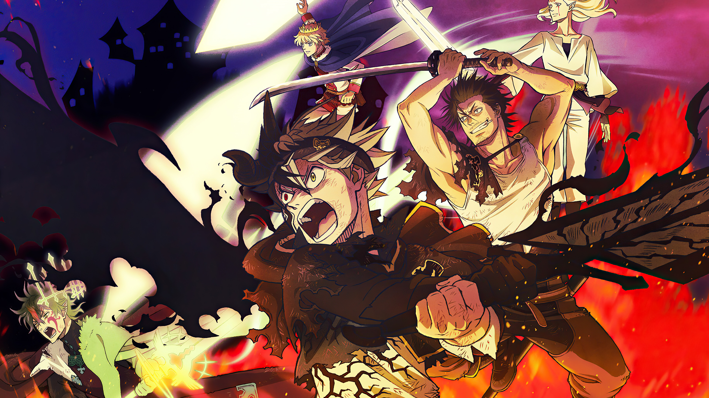
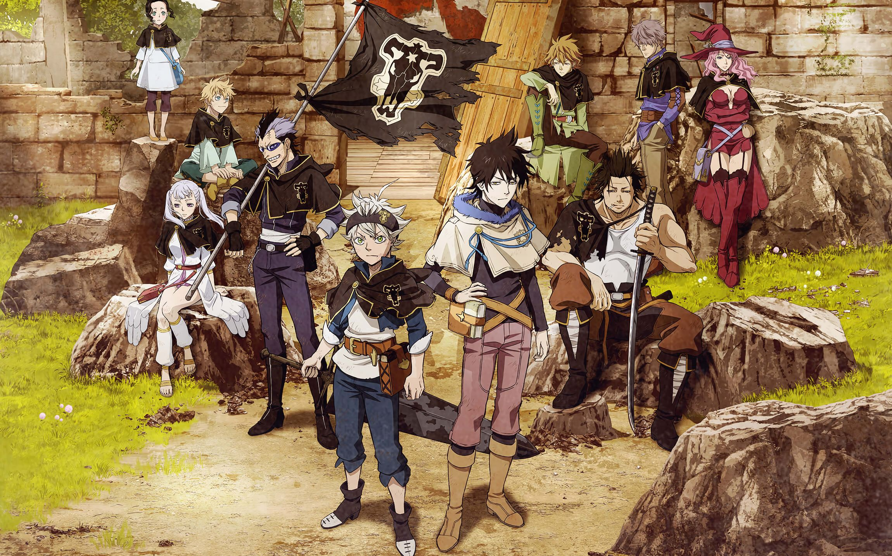
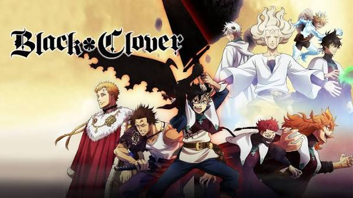
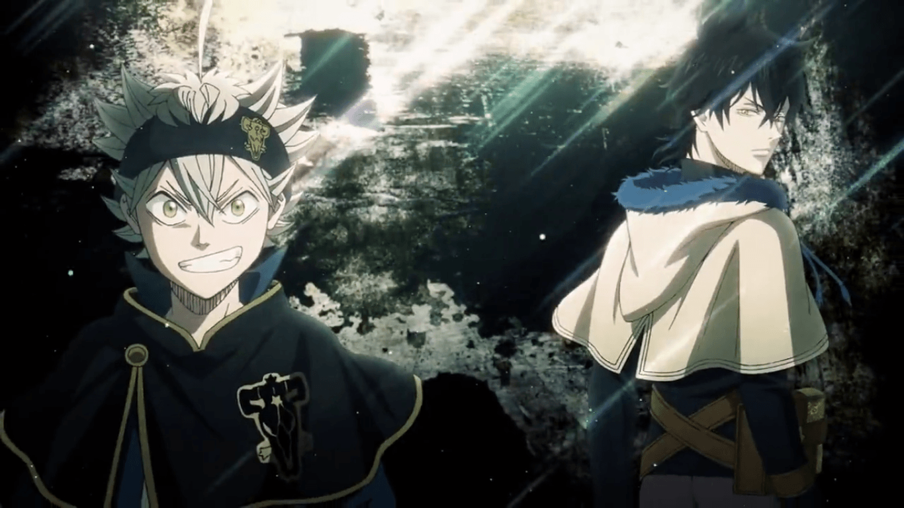

Black Clover

Black Clover (Japanese: ブラッククローバー, Hepburn: Burakku Kurōbā) is a Japanese manga series written and illustrated by Yūki Tabata. It started in Shueisha's shōnen manga magazine Weekly Shōnen Jump in February 2015. The series ran in the magazine until August 2023, after which it moved to Jump Giga in December of that same year and finished in May 2026. Its chapters were collected in 38 tankōbon volumes. Set in a world where people are born with the ability to use magic, the story follows Asta, a young boy without any magic power who is given a rare grimoire that grants him anti-magic abilities. With his fellow mages from the Black Bulls, Asta plans to become the next Wizard King.

The manga was first adapted into an original video animation (OVA) by Xebec Zwei, released in 2017. A 170-episode anime television series adaptation produced by Pierrot aired on TV Tokyo from October 2017 to March 2021; a second season is set to premiere in October 2026. An anime film, titled Black Clover: Sword of the Wizard King, premiered simultaneously in Japanese theaters and internationally on Netflix in June 2023. By June 2026, the manga had over 24.5 million copies in circulation worldwide.
Rerum laboriosam optio earum voluptates accusantium, qui vitae tenetur quam officiis incidunt molestiae velit deleniti mollitia ducimus aliquid voluptatum. The simple left and right floats create the familiar printed-page feeling without using columns or a complicated layout system.
Plot

The series focuses on Asta, a young orphan who is left to be raised in an orphanage in a rural village alongside his fellow orphan, Yuno. While everyone is born with the ability to utilize mana in the form of magical power, Asta, was born without mana and thus has no way to use magic, instead he focuses on physical strength. Conversely, Yuno was born as a prodigy with immense magical power and the talent to control wind magic.
Motivated by a desire to become the next Wizard King, an authority figure second to the king of Clover Kingdom, the two youths developed a friendly rivalry. Yuno obtains a legendary four-leaf grimoire held by the kingdom's first Wizard King. The four-leaf grimoire is a rare grimoire, only given to the most immense mages. Asta, despite his lack of magic, obtained an enigmatic five-leaf grimoire that contains mysterious elf swords and a bodiless member of the Devil race who utilizes rare anti-magic. Afterwards, Asta and Yuno each join a Magic Knight squad as the first step to fulfill their ambitions.

Asta joins the Black Bulls under Yami Sukehiro alongside Noelle Silva, while Yuno becomes a member of the Golden Dawn. They embark on various adventures while contending with an extremist group called the Eye of the Midnight Sun, whose leadership is manipulated by a Devil in avenging an injustice committed against the Elves by the Clover Kingdom at the time of its founding. The Magic Knights then face the Dark Triad of the Spade Kingdom, with Asta and Yuno learning of their Devils' influence on their lives and of the Dark Triad's plan to fully manifest the Devils into their world. Then the Magic Knights face the Dark Triad's eldest sibling, Lucius Zogratis, who wants to create his own perfect world.
Production
Manga author Yūki Tabata started in the manga industry at the age of 20 and worked as an assistant for seven years before his science fiction one-shot Hungry Joker was briefly serialized in the Shueisha magazine Weekly Shōnen Jump for 24 chapters from November 12, 2012, to May 13, 2013, before being canceled.[2][3][4] Tabata considered this manga a failure which he attributed largely to its quiet and dark-natured main character, who was very unlike the author himself. After its cancellation his friends advised him to develop an energetic, happy-go-lucky protagonist that more closely resembled Tabata and he began working on the fantasy-themed one-shot for Black Clover.[5][6][7] After its publication, he was assigned a new editor (Tatsuhiko Katayama) and Shueisha picked up the series for full serialization.[5][7]